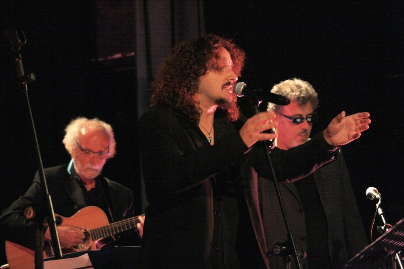
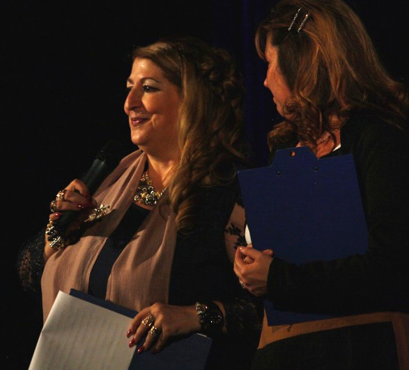

Calorosa l'accoglienza del pubblico. Rinviato al 17 luglio l'evento all'aperto, nella magnifica cornice del parco di Villa Scalini
 Sergio Farina, Paolo Barillari, Marco Brioschi
Il concerto previsto all'aperto, nel parco di Villa Ada Scalini si è tenuto nel Teatro di Tradate, per le avverse condizioni meteo.
New Entry, fra le voci: il "Performer teatrale" (come si definisce lui stesso) Paolo Barillari, artista poliedrico, profondo conoscitore del repertorio Jannacciano.
Paolo Barillari

Silvia Reggiani e Lucia Pagani introducono lo spettacolo